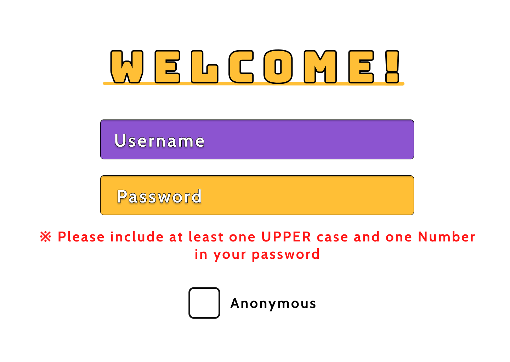

Jobs4Ags is a job search platform that consolidates job postings from multiple sources into one easy-to-use website, simplifying the job-hunting process. The site retrieves job listings through an integrated API and was designed using Figma, with development powered by React JS and styled with CSS.


DoorC is a social media platform specifically designed for individual colleges, facilitating seamless interaction between students within the same institution. The platform's backend is powered by Firebase, Django, and Python, ensuring robust performance and scalability.